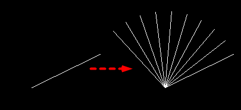

(vlax-invoke-method obj method arg1 [arg2...])
Invokes the method specified by "method" of the vla-object specified by "obj".
If the method makes sense to the vla-object and the supplied arguments are valid, the function runs successfully and the returned value depends on the vla-object's method, otherwise displays an error message.
The function accepts two arguments at least, and how many arguments must be supplied depends on the method invoked:
| Argument | Meaning |
|---|---|
| obj | A VLA-object. |
| method | A symbol or string naming the method to be invoked. |
| arg1, arg2... | Argument to be passed to the method called. |
Examples
| Code | Result |
|---|---|
|
(vl-load-com) (setq ename_line (car (entsel "\nPlease select a line: "))) (setq vlaname_line (vlax-ename->vla-object ename_line)) (setq centerpt (vlax-get-property vlaname_line'StartPoint)) (vlax-invoke-method vlaname_line 'ArrayPolar 10 360 centerpt) |
 |
Tell me about...
(vlax-get-property vla-object propertyName)
(vlax-method-applicable-p objmethod)